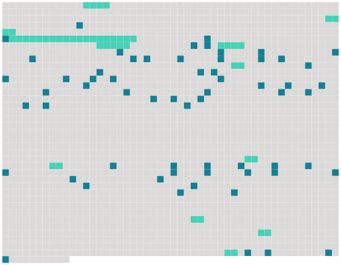

Longueur nb maillons : 74 mentions |
|
.. Tenez, je vais vous raconter une petite histoire arrivée à [une de mes clientes] à qui j'aurais donné le bon Dieu sans confession, comme on dit. [3 phrases] Comme mon domestique ne semblait point répondre, j'agitai à mon tour le cordon pendu dans mon lit, et bientôt des portes battirent, des pas troublèrent le silence de la maison dormante ; puis Jean parut, tenant une lettre qui disait : « [Mme Lelièvre] prie avec instance M. le docteur Siméon de passer chez [elle] immédiatement. [1 phrases] Et je répondis : « Le docteur Siméon, fort souffrant, prie [Mme Lelièvre] de vouloir bien appeler son confrère M. Bonnet. [1 phrases] « Une demi-heure plus tard environ, la sonnette de la rue appela de nouveau, et Jean vint me dire : « [C'] [est quelqu'un, un homme ou une femme ( je ne sais pas au juste, tant il est] caché ) qui voudrait parler bien vite à monsieur. [Il] dit qu'il y va de la vie de deux personnes. [3 phrases] « [Une espèce de fantôme noir] apparut et dès que Jean fut sorti, se [découvrit]
[C'] était [M'me Berthe Lelièvre] , une toute jeune femme, mariée depuis trois ans avec un gros commerçant de la ville qui passait pour avoir épousé la plus jolie personne de la province. « [Elle] était horriblement pâle, avec ces crispations de visage des gens affolés ; et [ses] mains tremblaient ; deux fois [elle] essaya de parler sans qu'un son pût sortir de [sa] bouche. Enfin, [elle] balbutia : « Vite, vite... [3 phrases] [Mon] ... [mon] amant est mort dans [ma] chambre...
. » [2 phrases] Puis je de mandai : « C'est [vous -même] qui êtes venue tout à l'heure??
» c'est [ma] bonne... [1 phrases] . » Puis, après un silence : « [Moi] , [j'] étais restée... [1 phrases]
»
» dit [-elle] [1 phrases]
» » [Elle] s'enveloppa jusqu'aux cheveux. [1 phrases] « Quand [elle] fut à mon côté dans l'obscurité de la voiture, [elle] me saisit brusquement la main, et la broyant dans [ses] doigts fins, [elle] balbutia avec des secousses dans la voix, des secousses venues du coeur déchiré : « Oh!! si vous saviez, si vous saviez comme [je] souffre!! [Je] l'aimais, [je] l'aimais éperdument, comme une insensée, depuis six mois.
»
»
» [15 phrases] » La bonne alla chercher le démêloir et la brosse de [sa maîtresse] ; mais comme elle tremblait et arrachait, en des mouvements involontaires, les cheveux longs et mêlés, [Mme Lelièvre] s'empara violemment du peigne, et [elle] rajusta la chevelure avec douceur, comme si [elle] l'eût caressée.
[Elle] refit la raie, [brossa] la barbe, puis [roula] lentement les moustaches sur [son] doigt, ainsi qu' [elle] avait coutume de le faire, sans doute, en des familiarités d'amour. « Et tout à coup, lâchant ce qu' [elle] tenait aux mains, [elle] saisit la tête inerte de [son] amant, et [regarda] longuement, désespérément cette face morte qui ne [lui] sourirait plus ; puis, s'abattant sur lui, [elle] l'étreignit à pleins bras, en l'embrassant avec fureur. [Ses] baisers tombaient, comme des coups, sur la bouche fermée, sur les yeux éteints, sur les tempes, sur le front. Puis, s'approchant de l'oreille, comme s'il eût pu [l'] entendre encore, comme pour balbutier le mot qui fait plus ardentes les étreintes, [elle] répéta, dix fois de suite, d'une voix déchirante : « Adieu, chéri. [3 phrases] Allons, [madame] , de l'énergie!!
» [14 phrases] J'étais resté tard à bavarder chez vous avec [votre femme] et notre ami qui m'avait amené dans sa voiture. [4 phrases]
Je m'attelai entre les jambes, comme un cheval entre deux brancards ; et nous voilà descendant l'escalier, éclairés maintenant par [la femme] [5 phrases]
»
[Elle] avait passé [son] bras sous celui de l'époux légitime et [elle] plongeait [son] oeil fixe dans le fond obscur du coupé. |
 |
Il est possible de télécharger la ressource sur la page Ortolang |
Si vous avez des questions ou vous voyez des erreurs, merci d'envoyer un mail à silvia.federzoni89@gmail.com |